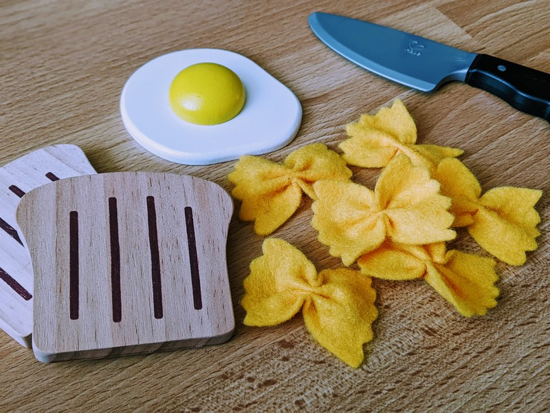
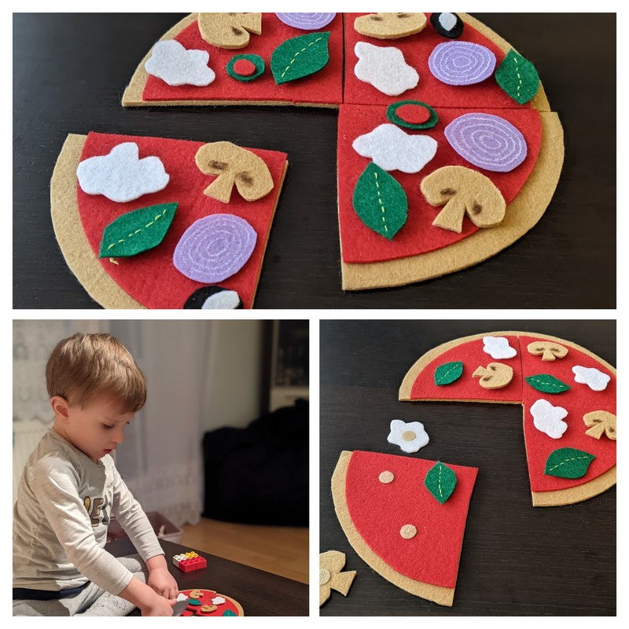

S jarem na mne opět po delší době dolehla tvůrčí nálada a pořídila jsem si sadu na křížkové vyšívání. Je to docela retro záležitost, ale zároveň příjemná možnost, jak na chvíli vypnout hlavu a přitom nechat něco vznikat pod rukama. To mě přivedlo na myšlenku podělit se tu zase občas o nějaké naše výtvory s Olim. Dnes to tedy bude spíše výtvor čistě můj, který jsem pro O. připravila už před nějakým časem jako překvapení do kuchyňky. Hry na vaření u nás jednu dobu byly velmi populární (stejně jako krájecí zelenina) a i dnes se k nim O. občas ještě rád vrací (pokud se mu zrovna omrzí vlaky :-D).
Těstovinové motýlky jsem vyráběla podle návodu, který jsem našla na Pinterestu, a je to opravdu jednoduché. Potřebujete jen dostatečně ohebnou filcovou látku (je tedy lepší volit nějakou tenší, nižší gramáže), nůžky, jehlu a světlou nit.

S pizzou jsem si vyhrála více – na ni je zase lepší zvolit filc silnější, aby pizza držela tvar. Na zdobení (pokud chcete mít pizzu variabilní a zdobit ji dle nálady) pak budete potřebovat samolepící suchý zips (sehnala jsem ve Stoklasovi), případně fixy či pigmentované pastelky/voskovky (miluju ty od Stabilo). Já jsem vyrobila na ozdobu cibuli, mozzarellu, lístky bazalky, olivy a žampiony, ale fantazii se meze nekladou :-)
